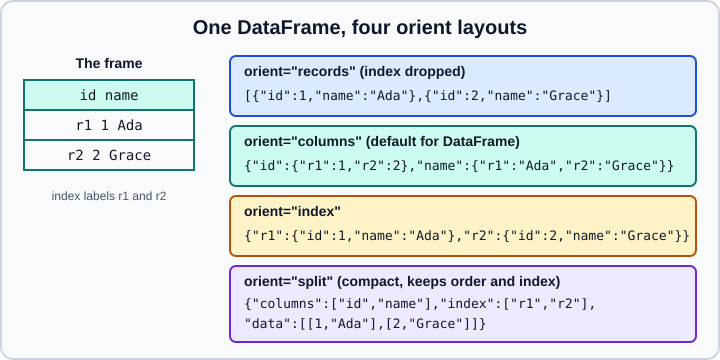

JSON, HTML & XML
|
This content was generated with the assistance of AI and should be verified against the official documentation before being relied on in production. |
Web APIs return JSON, public pages publish tables as HTML, and many enterprise and government feeds are XML. pandas
reads and writes all three, but they are tree-shaped formats and a DataFrame is a flat table, so the real work is
deciding how the tree maps onto rows and columns. This page covers the three families: read_json and to_json with
json_normalize for nested records, read_html and to_html, and read_xml and to_xml.
It targets pandas 3.1 on Python 3.13 or 3.14 and was checked in October 2026. Every example was run with Python 3.13,
pandas 3.1.0, NumPy 2.5.4, PyArrow 26.0.0, lxml 6.1.3, beautifulsoup4 4.15.0 and html5lib 1.1; the printed output is
the real output. Examples read from io.StringIO so they are self-contained. The other formats are in
CSV and Text Files, Excel and
Parquet, Feather, ORC and Iceberg; a comparison of formats
is in Data Acquisition and Formats.
Source: pandas user guide: JSON, HTML and XML.
JSON
Writing: orient decides the shape
DataFrame.to_json returns a JSON string (or writes to a path). The orient parameter chooses how the table is laid
out, and the right choice depends on who reads it.

import io
import json
import numpy as np
import pandas as pd
df = pd.DataFrame(
{
"id": [1, 2],
"name": ["Ada", "Grace"],
"score": [9.5, np.nan],
"when": pd.to_datetime(["2024-01-05", "2024-03-17"]),
},
index=["r1", "r2"],
)
for orient in ("columns", "index", "records", "split", "values"):
print(orient, df.to_json(orient=orient, date_format="iso"))Output:
columns {"id":{"r1":1,"r2":2},"name":{"r1":"Ada","r2":"Grace"},"score":{"r1":9.5,"r2":null},"when":{"r1":"2024-01-05T00:00:00.000","r2":"2024-03-17T00:00:00.000"}}
index {"r1":{"id":1,"name":"Ada","score":9.5,"when":"2024-01-05T00:00:00.000"},"r2":{"id":2,"name":"Grace","score":null,"when":"2024-03-17T00:00:00.000"}}
records [{"id":1,"name":"Ada","score":9.5,"when":"2024-01-05T00:00:00.000"},{"id":2,"name":"Grace","score":null,"when":"2024-03-17T00:00:00.000"}]
split {"columns":["id","name","score","when"],"index":["r1","r2"],"data":[[1,"Ada",9.5,"2024-01-05T00:00:00.000"],[2,"Grace",null,"2024-03-17T00:00:00.000"]]}
values [[1,"Ada",9.5,"2024-01-05T00:00:00.000"],[2,"Grace",null,"2024-03-17T00:00:00.000"]]orient |
Shape | When to use it |
|---|---|---|
|
A list of row objects; the index is dropped. |
The common API shape and the right choice for JSON Lines. |
|
An object of columns, each an object keyed by index label. |
Round trip with the index kept; verbose. |
|
An object of rows keyed by index label. |
Lookup by row label. |
|
Separate |
Compact; keeps order and the index; good for large frames. |
|
A bare list of lists. |
When the receiver knows the column order. |
|
A Table Schema: a |
Keeps dtype information; round-trips through |
Missing values (NaN, NaT, pd.NA) are written as JSON null. The default orient for a Series is "index".
Source: pandas.DataFrame.to_json.
Dates and numbers when writing
By default to_json writes datetimes as integer epoch milliseconds ("when":1704412800000). In pandas 3.1 relying on
that default emits a Pandas4Warning announcing that it will change to ISO 8601 strings, and asking for
date_format="epoch" explicitly emits a Pandas4Warning too, because the epoch format itself is deprecated. Pass
date_format="iso":
print(df.to_json(orient="records", date_format="iso", date_unit="s", indent=2))
print(df.to_json(orient="records", double_precision=3, force_ascii=False, date_format="iso"))Output:
[
{
"id":1,
"name":"Ada",
"score":9.5,
"when":"2024-01-05T00:00:00"
},
{
"id":2,
"name":"Grace",
"score":null,
"when":"2024-03-17T00:00:00"
}
]
[{"id":1,"name":"Ada","score":9.5,"when":"2024-01-05T00:00:00.000"},{"id":2,"name":"Grace","score":null,"when":"2024-03-17T00:00:00.000"}]-
date_format="iso"is the format to use;"epoch", the current default, is deprecated in pandas 3.1.date_unitis"s","ms"(default),"us"or"ns"and also sets the number of fractional digits in ISO strings. -
double_precision(default 10, maximum 15) limits the digits written for floats. -
force_ascii=Falsewrites non-ASCII characters as they are instead of\uXXXXescapes. -
indentpretty-prints;index=Falsedrops the index and is valid only for"split","table","records"and"values"(andindex=Trueonly for"split","table","index"and"columns"); other combinations raiseValueError. -
default_handleris a function called for objects JSON cannot represent (aDecimal, a custom class):df.to_json(default_handler=str). -
compression(inferred from the path) andstorage_optionswork as in the CSV writer.
Source: pandas user guide: writing JSON.
JSON Lines
JSON Lines (also called newline-delimited JSON) writes one record per line, which streams well and can be appended to.
Use orient="records" with lines=True:
print(df.to_json(orient="records", lines=True, date_format="iso"))
nd = '{"a":1}\n{"a":2}\n{"a":3}\n'
print(pd.read_json(io.StringIO(nd), lines=True).a.tolist(), pd.read_json(io.StringIO(nd), lines=True, nrows=2).shape)
with pd.read_json(io.StringIO(nd), lines=True, chunksize=2) as reader:
print([len(chunk) for chunk in reader])Output:
{"id":1,"name":"Ada","score":9.5,"when":"2024-01-05T00:00:00.000"}
{"id":2,"name":"Grace","score":null,"when":"2024-03-17T00:00:00.000"}
[1, 2, 3] (2, 1)
[2, 1]Source: pandas.DataFrame.to_json.
lines=True is accepted only for orient="records" (any other orient raises ValueError: 'lines' keyword only valid
when 'orient' is records). nrows and chunksize work only with lines=True, so a huge JSON Lines file can be
processed in pieces exactly like a CSV file.
Reading JSON
pd.read_json(path_or_buf) accepts a path, URL or file-like object. A string of JSON text is not accepted as data:
it is treated as a path and raises FileNotFoundError. Wrap literal text in io.StringIO.
try:
pd.read_json('{"a":[1]}')
except FileNotFoundError as exc:
print(type(exc).__name__)
print(pd.read_json(io.StringIO('{"a":{"x":1,"y":2},"b":{"x":3,"y":4}}')))
print(pd.read_json(io.StringIO('{"a":{"x":1,"y":2},"b":{"x":3,"y":4}}'), orient="index"))
print(pd.read_json(io.StringIO('{"x":1,"y":2}'), typ="series"))Output:
FileNotFoundError
a b
x 1 3
y 2 4
x y
a 1 2
b 3 4
x 1
y 2
dtype: int64Source: pandas.read_json.
The same JSON read with two orients gives transposed frames, so orient must match how the data was written. For a
stream of records (the usual API response) the default works because pandas recognises a list of objects as records.
typ="series" returns a Series.
Types and dates
read_json converts types with heuristics that surprise people:
-
Digit strings are converted to numbers:
"01234"becomes1234. Declaredtype={"zip": str}(ordtype=Falseto turn conversion off for every column). -
Columns whose name looks like a date are converted: names ending in
_ator_time, starting withtimestamp, or equal tomodifiedordate. A column calledwhenis not converted. -
The
convert_datesandkeep_default_dateskeywords that used to control this are deprecated in pandas 3.1 (each emits aPandas4Warning). Parse other date columns withpd.to_datetimeafter reading, and passdtype=Falseto turn off every conversion, dates included.date_unitsays whether epoch numbers in the input are seconds, milliseconds, microseconds or nanoseconds.
iso = df.to_json(orient="records", date_format="iso")
recs = pd.read_json(io.StringIO(iso))
print(recs.dtypes.astype(str).tolist())
recs["when"] = pd.to_datetime(recs["when"])
print(recs.dtypes.astype(str).tolist())
print(pd.read_json(io.StringIO(iso), dtype=False).dtypes.astype(str).tolist())
zips = '[{"zip":"01234"},{"zip":"00501"}]'
print(pd.read_json(io.StringIO(zips)).zip.tolist())
print(pd.read_json(io.StringIO(zips), dtype={"zip": str}).zip.tolist())Output:
['int64', 'str', 'float64', 'str']
['int64', 'str', 'float64', 'datetime64[us]']
['int64', 'str', 'float64', 'str']
[1234, 501]
['01234', '00501']Source: pandas.DataFrame.to_json.
The when column comes back as text because its name does not look like a date; pd.to_datetime after reading
converts it. dtype=False gives the same dtypes here; it matters when a column such as created_at would
otherwise be converted to datetimes or a digit string to a number.
Other useful parameters: dtype_backend ("numpy_nullable" or "pyarrow"), precise_float=True for exact
parsing of long decimals, convert_axes (convert index and column labels, default True), encoding and
encoding_errors, compression, and storage_options.
print(pd.read_json(io.StringIO('[{"a":1},{"a":null}]'), dtype_backend="numpy_nullable").dtypes.astype(str).tolist())
print(pd.read_json(io.StringIO('{"x":[0.30000000000000004]}'), precise_float=True).x[0])Output:
['Int64']
0.30000000000000004Source: pandas.read_json.
The table orient preserves types
orient="table" writes a Table Schema, so reading it back restores the index and, for most types, the dtypes:
txt = df.to_json(orient="table")
print(json.loads(txt)["schema"]["fields"])
back = pd.read_json(io.StringIO(txt), orient="table")
print(back.dtypes.astype(str).tolist(), back.index.tolist())Output:
[{'name': 'index', 'type': 'string', 'extDtype': 'str'}, {'name': 'id', 'type': 'integer'}, {'name': 'name', 'type': 'string', 'extDtype': 'str'}, {'name': 'score', 'type': 'number'}, {'name': 'when', 'type': 'datetime'}]
['int64', 'str', 'float64', 'datetime64[ns]'] ['r1', 'r2']Source: pandas.DataFrame.to_json.
Note that the datetime column came back as datetime64[ns], not the new microsecond default. The schema is a
specification used by other tools such as Frictionless and notebooks, but it supports only a limited set of types and
the version it writes is 1.4.0.
The pyarrow engine
engine="pyarrow" (with lines=True) uses Arrow’s multithreaded JSON Lines reader, which is faster for large files.
It needs a binary file or path, so a text buffer fails:
print(pd.read_json(io.BytesIO(nd.encode()), lines=True, engine="pyarrow").dtypes.astype(str).tolist())Output:
['int64']Source: pandas.read_json.
Nested JSON and json_normalize
Real API responses nest objects and lists. read_json does not flatten them: a nested object stays as a Python
dict inside a cell. pd.json_normalize is the tool that flattens records into columns.
data = [
{"id": 1, "user": {"name": "Ada", "geo": {"city": "London"}}, "tags": ["a", "b"],
"orders": [{"sku": "x", "qty": 2}, {"sku": "y", "qty": 1}]},
{"id": 2, "user": {"name": "Grace"}, "tags": [],
"orders": [{"sku": "z", "qty": 5}]},
]
print(pd.json_normalize(data).to_string())
print(pd.json_normalize(data, max_level=1).columns.tolist())
print(pd.json_normalize(data, sep="_").columns.tolist())Output:
id tags orders user.name user.geo.city
0 1 [a, b] [{'sku': 'x', 'qty': 2}, {'sku': 'y', 'qty': 1}] Ada London
1 2 [] [{'sku': 'z', 'qty': 5}] Grace NaN
['id', 'tags', 'orders', 'user.name', 'user.geo']
['id', 'tags', 'orders', 'user_name', 'user_geo_city']Source: pandas.json_normalize.
Nested dictionaries become dotted column names (sep changes the dot), max_level limits the depth, and lists are left
as they are. To turn a list of records into rows, name it with record_path and carry parent fields along with
meta:
flat = pd.json_normalize(
data, record_path="orders", meta=["id", ["user", "name"]],
meta_prefix="m_", record_prefix="o_",
)
print(flat.to_string())
try:
pd.json_normalize([{"id": 1, "orders": [{"s": 1}]}, {"id": 2}], record_path="orders", meta="id")
except KeyError as exc:
print(type(exc).__name__, exc)Output:
o_sku o_qty m_id m_user.name
0 x 2 1 Ada
1 y 1 1 Ada
2 z 5 2 Grace
KeyError "Key 'orders' not found. If specifying a record_path, all elements of data should have the path."record_path requires every record to have the path; pass errors="ignore" to tolerate missing meta keys (it does not
excuse a missing record_path). A list column that you want as rows but not through record_path can be expanded with
DataFrame.explode; see Melt, Stack and Explode.
Source: pandas.json_normalize.
HTML
read_html
pd.read_html finds every <table> element in a page and returns a list of DataFrames. It needs lxml (the default,
fast parser) or beautifulsoup4 together with html5lib (slower, tolerant of broken HTML).
html = """<html><body>
<h2>Prices</h2>
<table id="prices" class="data"><thead><tr><th>Item</th><th>Price</th><th>Link</th></tr></thead>
<tbody><tr><td>Tea</td><td>1,200.50</td><td><a href="https://example.com/tea">tea</a></td></tr>
<tr><td>Coffee</td><td>3.10</td><td><a href="https://example.com/coffee">coffee</a></td></tr></tbody></table>
<h2>Stock</h2>
<table border="1"><tr><th colspan="2">Stock</th></tr><tr><th>Item</th><th>Units</th></tr><tr><td>Tea</td><td>10</td></tr></table>
</body></html>"""
tables = pd.read_html(io.StringIO(html))
print(len(tables))
print(tables[0])
print(tables[0].dtypes.astype(str).tolist())
print(tables[1].columns.tolist())Output:
2
Item Price Link
0 Tea 1200.5 tea
1 Coffee 3.1 coffee
['str', 'float64', 'str']
[('Stock', 'Item'), ('Stock', 'Units')]Source: pandas.read_html.
Notice that 1,200.50 was parsed as 1200.5: read_html uses thousands="," by default (unlike read_csv), and
the second table, with two header rows, got a column MultiIndex. As with the other readers, pass a path, URL or
file-like object; a raw string of HTML is treated as a path and raises FileNotFoundError. A page that blocks the
default user agent can be fetched with requests (or urllib) first and then handed to read_html through
io.StringIO.
Choosing the right table is the main task:
print(pd.read_html(io.StringIO(html), match="Coffee")[0].shape)
prices = pd.read_html(io.StringIO(html), attrs={"id": "prices"}, thousands=",")[0]
print(prices["Price"].tolist(), prices["Price"].dtype)
links = pd.read_html(io.StringIO(html), attrs={"id": "prices"}, extract_links="body")[0]
print(links.iloc[0].tolist())
print(pd.read_html(io.StringIO(html), flavor=["lxml", "bs4"])[0].shape)
try:
pd.read_html(io.StringIO("<p>none</p>"))
except ValueError as exc:
print(type(exc).__name__, exc)Output:
(2, 3)
[1200.5, 3.1] float64
[('Tea', None), ('1,200.50', None), ('tea', 'https://example.com/tea')]
(2, 3)
ValueError No tables found-
matchis a string or regular expression; only tables containing matching text are returned. -
attrsis a dictionary of HTML attributes ({"id": "prices"},{"class": "data"}) that the table must have. -
header,index_col,skiprows,parse_dates,converters,na_values,thousands,decimalanddtype_backendbehave as in the CSV reader (see CSV and Text Files). -
extract_linksis"header","footer","body"or"all": each cell becomes a(text, href)tuple, withNonewhen the cell holds no link. -
displayed_only=True(default) ignores elements hidden withdisplay:none. -
flavorselects the parser:"lxml","bs4"(or its synonym"html5lib", both using BeautifulSoup with html5lib) or a list of flavors tried in order.
read_html reads the HTML the server sends. Tables that JavaScript builds in the browser are not in that HTML; use the
site’s JSON API or a browser automation tool instead. Always check the site’s terms and robots rules before scraping.
Source: pandas.read_html.
to_html
DataFrame.to_html writes an HTML <table>. It escapes <, > and & by default, which is what you want for data
that you do not control.
small = pd.DataFrame({"a": [1.5, None], "b": ["<x>", "y&z"]})
print(small.to_html(index=False, na_rep="-", float_format="{:.1f}".format,
classes="table table-sm", border=0, table_id="t1"))
print(small.to_html(escape=False, index=False).count("<x>"))Output:
<table class="dataframe table table-sm" id="t1">
<thead>
<tr style="text-align: right;">
<th>a</th>
<th>b</th>
</tr>
</thead>
<tbody>
<tr>
<td>1.5</td>
<td><x></td>
</tr>
<tr>
<td>-</td>
<td>y&z</td>
</tr>
</tbody>
</table>
1escape=False writes raw HTML, which is a cross-site-scripting risk if any cell comes from users. Other options:
columns, header, index, na_rep, float_format, formatters (a function or dictionary per column),
max_rows and max_cols (a truncated table with an ellipsis row), render_links=True to turn URLs into anchors,
justify, classes, border and table_id. For colours and per-cell formatting use a Styler and
Styler.to_html, described in Table Styling.
Source: pandas.DataFrame.to_html.
XML
read_xml
pd.read_xml treats each element selected by an XPath expression as a row; the attributes and child elements of that
element become columns.
xml = """<?xml version="1.0" encoding="UTF-8"?>
<catalog>
<book id="b1" lang="en"><title>Data</title><price>12.50</price><published>2024-01-05</published></book>
<book id="b2" lang="es"><title>Datos</title><price>9</price><published>2023-11-30</published></book>
</catalog>"""
books = pd.read_xml(io.StringIO(xml))
print(books)
print(books.dtypes.astype(str).tolist())
print(pd.read_xml(io.StringIO(xml), parse_dates=["published"]).dtypes.astype(str).tolist())
print(pd.read_xml(io.StringIO(xml), attrs_only=True).columns.tolist())
print(pd.read_xml(io.StringIO(xml), elems_only=True).columns.tolist())
print(pd.read_xml(io.StringIO(xml), xpath="//book[@lang='es']").shape)Output:
id lang title price published
0 b1 en Data 12.5 2024-01-05
1 b2 es Datos 9.0 2023-11-30
['str', 'str', 'str', 'float64', 'str']
['str', 'str', 'str', 'float64', 'datetime64[us]']
['id', 'lang']
['title', 'price', 'published']
(1, 5)Source: pandas.read_xml.
The default XPath is ./* (the children of the root). attrs_only=True and elems_only=True restrict the columns
to attributes or to child elements; names renames columns, and dtype, converters and parse_dates work as in
the CSV reader. As with the other readers, pass a path, URL or file-like object, not a raw XML string (a raw string
is treated as a path and raises FileNotFoundError).
Parsers
parser="lxml" (default) supports full XPath 1.0 and XSLT; parser="etree" uses the standard library
xml.etree.ElementTree, with no dependency but only a limited XPath subset (paths must be relative, for example
.//book, not //book).
Namespaces
A document that declares a default namespace (xmlns="...") matches no element for an unprefixed XPath, even though
the tags look plain. Declare a prefix of your own in namespaces:
ns = '<r xmlns="http://x.org/ns"><i><v>1</v></i><i><v>2</v></i></r>'
try:
pd.read_xml(io.StringIO(ns), xpath="//i")
except ValueError as exc:
print("no match:", str(exc)[:42])
print(pd.read_xml(io.StringIO(ns), xpath="//n:i", namespaces={"n": "http://x.org/ns"}))
print(pd.read_xml(io.StringIO(ns), xpath=".//doc:i", namespaces={"doc": "http://x.org/ns"}, parser="etree").shape)Output:
no match: xpath does not return any nodes or attribu
v
0 1
1 2
(2, 1)Source: pandas.read_xml.
XSLT and large files
stylesheet= (lxml only) applies an XSLT 1.0 stylesheet to reshape a complicated document into a flat one before
parsing. iterparse reads huge files without building the whole tree, with a dictionary that maps the repeating
element to the fields you want:
xsl = """<xsl:stylesheet version="1.0" xmlns:xsl="http://www.w3.org/1999/XSL/Transform">
<xsl:output method="xml" indent="yes"/>
<xsl:template match="/"><books><xsl:for-each select="//book">
<row><title><xsl:value-of select="title"/></title><lang><xsl:value-of select="@lang"/></lang></row>
</xsl:for-each></books></xsl:template></xsl:stylesheet>"""
print(pd.read_xml(io.StringIO(xml), stylesheet=io.StringIO(xsl)))
with open("catalog.xml", "w", encoding="utf-8") as handle:
handle.write(xml)
print(pd.read_xml("catalog.xml", iterparse={"book": ["id", "lang", "title", "price"]}).shape)Output:
title lang
0 Data en
1 Datos es
(2, 4)iterparse is meant for files on disk and keeps memory use low, because only the listed attributes and child elements
of each repeating element are kept. XML from untrusted sources can contain entity-expansion and external-reference
tricks; treat such files as hostile input and see the security notes of Python’s XML libraries and of defusedxml
before parsing them.
Source: pandas.read_xml.
to_xml
DataFrame.to_xml writes one row element per row. The root and row names, whether values are attributes or elements,
namespaces and pretty-printing are all configurable:
print(small.to_xml(root_name="rows", row_name="row", index=False, pretty_print=True))
print(small.to_xml(index=False, attr_cols=["a"], elem_cols=["b"], na_rep="NA", xml_declaration=False, parser="etree"))Output:
<?xml version='1.0' encoding='utf-8'?>
<rows>
<row>
<a>1.5</a>
<b><x></b>
</row>
<row>
<a/>
<b>y&z</b>
</row>
</rows>
<?xml version="1.0" encoding="utf-8"?>
<data>
<row a="1.5">
<b><x></b>
</row>
<row a="NA">
<b>y&z</b>
</row>
</data>With parser="etree", the xml_declaration=False call still prints a declaration in pandas 3.1; strip it
yourself if the receiver rejects it. Other parameters: index (default True writes the index as the first element),
namespaces and prefix, encoding, compression, and stylesheet (lxml) to transform the output. Remember that
<, > and & in values are escaped for you.
Source: pandas.DataFrame.to_xml.
Choosing between the formats
| Format | Good for | Weak at |
|---|---|---|
JSON |
API responses, configuration, nested records, line-oriented logs (JSON Lines). |
Types (dates, decimals), very large tables (text and no columnar compression). |
HTML tables |
One-off extraction of a published table. |
Stability: the page layout changes without notice. |
XML |
Document-shaped enterprise and scientific data with schemas and namespaces. |
Verbosity; flat table mapping needs XPath or XSLT. |
For analytics on large tables, convert once to Parquet; see Parquet, Feather, ORC and Iceberg.
Where older books and tutorials are outdated
| Older statement | pandas 3.1 reality | Changed |
|---|---|---|
|
A string is a path; wrap text in |
Gone by 3.0 |
|
Wrap the text in |
Same change |
|
Still true, but 3.1 warns that the default will become ISO 8601 strings, and |
Upcoming (warning in 3.1) |
|
Use |
Old locations gone |
|
Gone; use |
Gone by 3.0 |
|
Text columns are |
3.0 |
See What’s New in 3.x and Migrating for the full list.